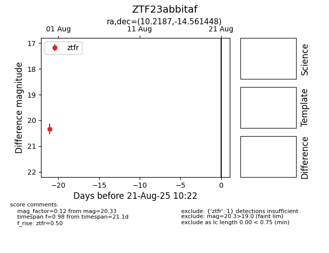

Target ZTF23abbitaf at 2025-08-21 10:22, see:
FINK: fink-portal.org/ZTF23abbitaf
Lasair: lasair-ztf.lsst.ac.uk/objects/ZTF23abbitaf
ALeRCE: alerce.online/object/ZTF23abbitaf
alt names
ZTF23abbitaf (ztf,alerce)
coordinates:
equatorial (ra, dec) = (10.2187,-14.56145)
galactic (l, b) = (111.3249,-77.19453)
photometry
last ztfr=20.33
1 ztfr detections
